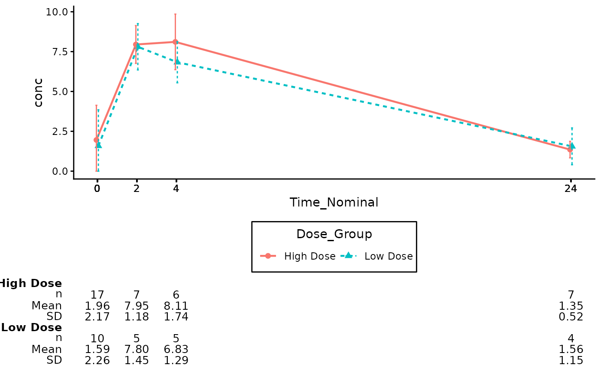
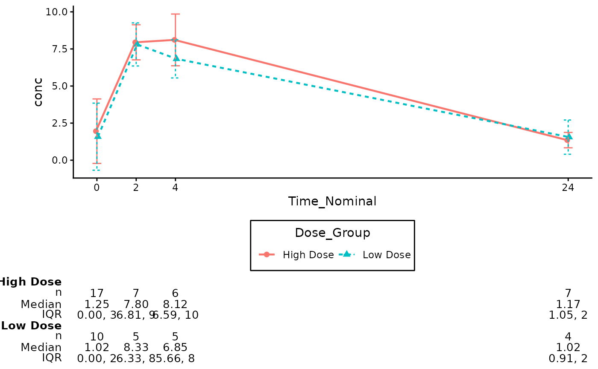

These functions provide capabilities to annotate Pharmacokinetics plot
(gg_pkc_lineplot()) with additional summary statistics table.
The annotations are added using the cowplot package for flexible placement.
annotate_pkc_df(
gg_plt,
data,
time_var = NULL,
analyte_var = NULL,
group = NULL,
summary_stats = c("n", "mean", "sd"),
digits = NULL,
text_size = 3.5,
rel_height_plot = 0.75
)(ggplot2)
The PK plot.
(data.frame)
The raw or summarized dataset used to generate the table.
(tidy-select)
Optional. If NULL (default), the function automatically extracts these
from the gg_plt mapping.
(character)
A vector of statistics to include. Defaults to c("n", "mean", "sd").
(numeric, list, or formula)
Optional specification for the number of decimal places for the summary statistics.
Can be a single integer (e.g., 2), a vector of integers matching the statistics
(e.g., c(0, 2, 2)), or a gtsummary style formula. Defaults to NULL
(uses gtsummary default auto-formatting).
(numeric)
The font size for the table text. Defaults to 3.5.
(numeric)
Relative height of the plot vs the table. Defaults to 0.75.
gg_pkc_lineplot() for related functionalities.
# Prepare PK Data using the built-in Theoph dataset
df_pk <- Theoph
df_pk$Time_Nominal <- round(df_pk$Time)
# Filter to specific timepoints to keep the table clean
df_pk <- df_pk[df_pk$Time_Nominal %in% c(0, 2, 4, 8, 24), ]
# Create a mock treatment group based on Dose
df_pk$Dose_Group <- ifelse(df_pk$Dose > 4.5, "High Dose", "Low Dose")
# Create the Base Plot using actual Theoph column names
p_pk <- gg_pkc_lineplot(
data = df_pk,
time_var = Time_Nominal,
analyte_var = conc,
group = Dose_Group,
stat = "mean",
variability = "sd",
log_y = FALSE
)
#> ℹ We encourage to supply `time_var` as a factor, since it supports correct
#> decimals formatting in the summary table.
#> Scale for x is already present.
#> Adding another scale for x, which will replace the existing scale.
# Annotate the Plot (Auto-detects variables from aesthetic mapping)
annotate_pkc_df(
data = df_pk,
gg_plt = p_pk
)

# Annotate with specific statistics, explicit variable names, and explicit digits
annotate_pkc_df(
data = df_pk,
gg_plt = p_pk,
time_var = "Time_Nominal",
analyte_var = "conc",
group = "Dose_Group",
summary_stats = c("n", "median", "iqr"),
digits = c(0, 2, 2)
)
